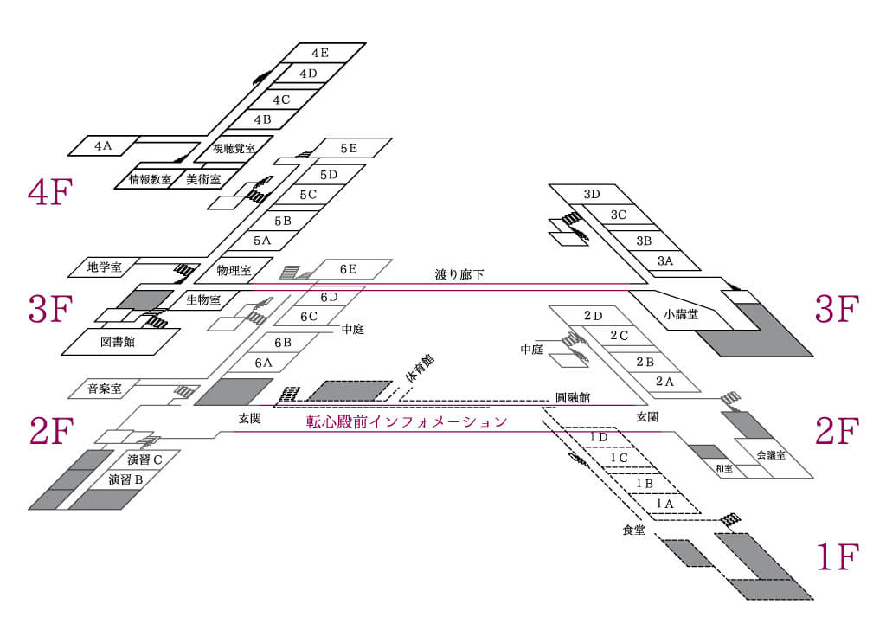
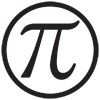
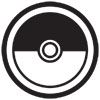
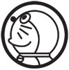
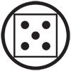
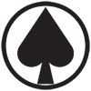
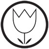
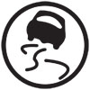
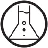

マップ
校内図
本校の校内図です。
{kind=link}
展示団体一覧

書道部 1A
臨書・創作・拓本の展示。なお、アンケートに答えていただくとうちわと交換します。
臨書・創作・拓本の展示。なお、アンケートに答えていただくとうちわと交換します。
中１科学実験 1BCD
鏡づくり、さわれる水、水中シャボン玉、スライム、スーパーボール、浮き出す文字、そして燃える文字などを実際に体験してみよう。
鏡づくり、さわれる水、水中シャボン玉、スライム、スーパーボール、浮き出す文字、そして燃える文字などを実際に体験してみよう。
中１壁画 1BCD
今年の中１も壁画をします。やや小ぶりですが、見てください。テーマは…。
今年の中１も壁画をします。やや小ぶりですが、見てください。テーマは…。
数学研究会 2A
懸賞問題や計算大会を用意しています。
懸賞問題や計算大会を用意しています。
東菁会 2B
東菁会会員の作品を展示しております。
東菁会会員の作品を展示しております。
中２ 2CD
今回、中２のものづくりでは、迷路に深海の世界を組み合わせた作品を展示します。迷路を回りながら、深海に関する展示も見ることもできるので、どなたでも楽しめます。
今回、中２のものづくりでは、迷路に深海の世界を組み合わせた作品を展示します。迷路を回りながら、深海に関する展示も見ることもできるので、どなたでも楽しめます。
中３教室展示パート 3AB
学校のジオラマと、様々なテーマの壁新聞を展示します。
学校のジオラマと、様々なテーマの壁新聞を展示します。
歴史部菁史会 3Cf
仏像が、そこにあります。本当にあるのでしょうか。
仏像が、そこにあります。本当にあるのでしょうか。
軍事同好会 3Cr
第２次世界大戦に興味がある人は来てください！
クイズも用意しています！
第２次世界大戦に興味がある人は来てください！
クイズも用意しています！

ポケモン同好会 3Df
ポケモン好き集まれ！新作も発表されて再ブーム到来。 息抜きにぜひ。展示もあるよ！
ポケモン好き集まれ！新作も発表されて再ブーム到来。 息抜きにぜひ。展示もあるよ！

ドラえもん研究同好会 3Dr
今年もドラえもんクイズを用意しています。
今年のドラえもん王は誰だ？
今年もドラえもんクイズを用意しています。
今年のドラえもん王は誰だ？
音楽部 4A
僕たちは音楽に対して真剣に取り組んでいるクラブです。
ぜひ演奏を聴きに来てください。
僕たちは音楽に対して真剣に取り組んでいるクラブです。
ぜひ演奏を聴きに来てください。
暗号同好会 4Bf
急募：暗号に興味ある人、スパイ希望者必見！
PCによる暗号化体験、部誌発行あり。
急募：暗号に興味ある人、スパイ希望者必見！
PCによる暗号化体験、部誌発行あり。
情報同好会 4Br
会員が作ったPCゲームが遊べます。
CD配布もあるよ！
会員が作ったPCゲームが遊べます。
CD配布もあるよ！
文藝同好会 4Cf
会員の文学に対する熱い思いを込めた会誌を配布しております。
会員の文学に対する熱い思いを込めた会誌を配布しております。
アニメ研究会 4D
ガンダムなどのプラモデルを展示しています。
ガンダムなどのプラモデルを展示しています。

MGA同好会 4E
変人が集うこの同好会では、自作ゲームを紹介しています。
火照った体の冷やし所です。
変人が集うこの同好会では、自作ゲームを紹介しています。
火照った体の冷やし所です。
観賞魚同好会 5Af
日本の川魚メインで展示しています。休憩がてらお立ち寄りください。
日本の川魚メインで展示しています。休憩がてらお立ち寄りください。
ロケット同好会 5Ar
本物の火薬を使った、本格的なロケットを飛ばします。ぜひグラウンドにもどうぞ！
本物の火薬を使った、本格的なロケットを飛ばします。ぜひグラウンドにもどうぞ！
登山同好会 5Bf
歩き疲れたそこのアナタ！一息ついて、「面白い」紀行文でも読みませんか？
歩き疲れたそこのアナタ！一息ついて、「面白い」紀行文でも読みませんか？
英語研究会 5Br
模擬国連活動の展示や英語のパズルをしています！ Enjoy puzzles and win prizes!!
模擬国連活動の展示や英語のパズルをしています！ Enjoy puzzles and win prizes!!
写真部 5C
写真とは何か。被写体とは何か。芸術表現として写真を研究する。それが我が写真部！
写真とは何か。被写体とは何か。芸術表現として写真を研究する。それが我が写真部！
電子工作部 5D
部員が回路設計・製作した自律式サッカーロボットやマイコンを使った作品などを展示。
部員が回路設計・製作した自律式サッカーロボットやマイコンを使った作品などを展示。

マジック同好会 5E
１日に数回ショーをします。
その時間以外でも、来てくれた方にはマジックを見せます。
１日に数回ショーをします。
その時間以外でも、来てくれた方にはマジックを見せます。

園芸部 6A
例年通り植物苗の販売を行います。
また、植物の展示も行います。
例年通り植物苗の販売を行います。
また、植物の展示も行います。
クイズ研究部 6B
早押し体験や部員自作問題の配布をします。
体育館の○×クイズも是非！
早押し体験や部員自作問題の配布をします。
体育館の○×クイズも是非！
折り紙同好会 6Cf
たかが紙、されど芸術。
「これが紙？」という感動を味わってください。
たかが紙、されど芸術。
「これが紙？」という感動を味わってください。
チェス研究会 6Cr
今日は東大寺学園で。さあ、白黒つけようじゃないか。
今日は東大寺学園で。さあ、白黒つけようじゃないか。
航空研究会 6Df
旅客機は好きか？戦闘機は好きか？そんなあなたはぜひ空研に！
旅客機は好きか？戦闘機は好きか？そんなあなたはぜひ空研に！

のりもの友の会 6Dr
鉄道シュミレータやジオラマ、旅行手段の研究など、お子様から熱心なファンまで楽しめます。
鉄道シュミレータやジオラマ、旅行手段の研究など、お子様から熱心なファンまで楽しめます。
鉄道研究部 6E
菁々祭といえば鉄研！自由に運転できる模型！みんな楽しい展示！レッツ出発進行！
菁々祭といえば鉄研！自由に運転できる模型！みんな楽しい展示！レッツ出発進行！
囲碁将棋部 音楽室
部員との対局や、部員の作った詰将棋などの展示をしています。
部員との対局や、部員の作った詰将棋などの展示をしています。
新聞部 新聞部室前
伝統的冊子「番茶党」を発行します！
今年の一味違う番茶を堪能あれ！
伝統的冊子「番茶党」を発行します！
今年の一味違う番茶を堪能あれ！

科学部 生物室
緊急事態！巨大ミジンコが生物室に出現！
理科好きの皆様、楽しめること間違いなし！
緊急事態！巨大ミジンコが生物室に出現！
理科好きの皆様、楽しめること間違いなし！
美術部 美術室
文化祭関連の原画・原案や美術部員による壁画、個人作品などの多数展示！ご高覧あれ！
文化祭関連の原画・原案や美術部員による壁画、個人作品などの多数展示！ご高覧あれ！
中３謎解きパート 情報教室
皆さんが実際に謎を解く「リアル謎解きゲーム」を実施します。君は謎を解き明かせるか？
皆さんが実際に謎を解く「リアル謎解きゲーム」を実施します。君は謎を解き明かせるか？
お茶席 和室・会議室
今年も菁々会茶道同好会により、菁々祭お茶席を開催させていただきます。
美味しいお抹茶とお菓子をご用意しておりますので皆さまお誘いあわせの上、お越しください。
東大寺にゆかりのあるお道具も見ていただけます。
お茶席のご経験のない方でも、どうぞお気軽に…。
会議室（椅子席）・和室（お点前）のどちらでもお好きな場所でお召し上がりいただけます。
また、この学園でしか手に入れることのできない東大寺饅頭の販売もございます。１箱２個入り600円、限定数ありです。
時間……9時30分～15時30分
お茶券……一般：450円、在校生：400円
今年も菁々会茶道同好会により、菁々祭お茶席を開催させていただきます。
美味しいお抹茶とお菓子をご用意しておりますので皆さまお誘いあわせの上、お越しください。
東大寺にゆかりのあるお道具も見ていただけます。
お茶席のご経験のない方でも、どうぞお気軽に…。
会議室（椅子席）・和室（お点前）のどちらでもお好きな場所でお召し上がりいただけます。
また、この学園でしか手に入れることのできない東大寺饅頭の販売もございます。１箱２個入り600円、限定数ありです。
時間……9時30分～15時30分
お茶券……一般：450円、在校生：400円
書画展 図書館
東大寺塔頭の書画や菁々会会員の作品を展示しております。また、塔頭の作品は販売もしております。
東大寺塔頭の書画や菁々会会員の作品を展示しております。また、塔頭の作品は販売もしております。